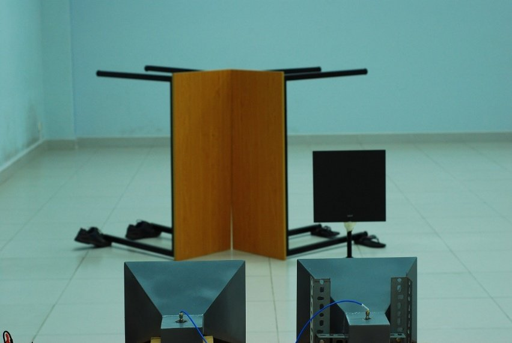
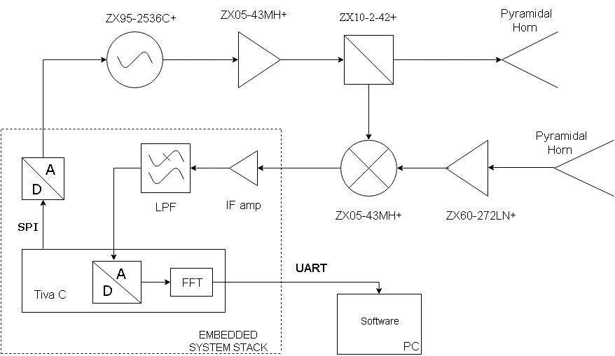
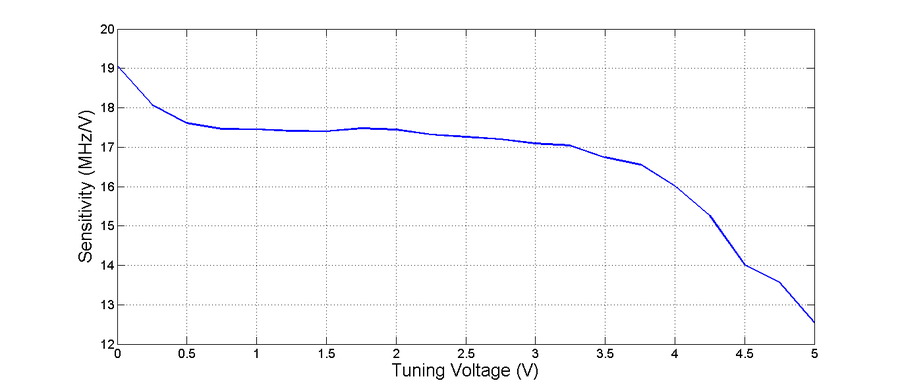
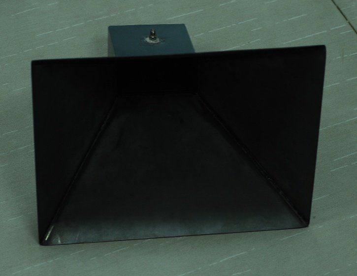
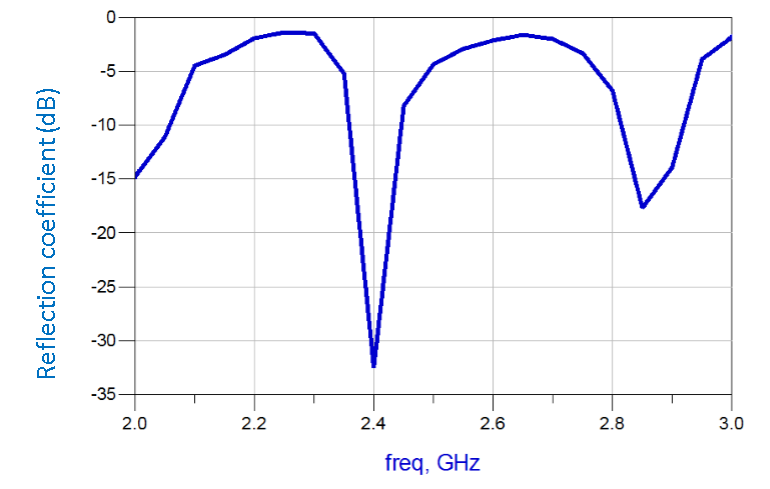
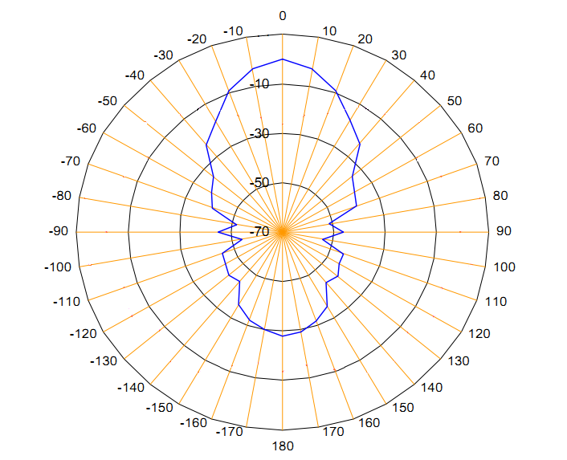
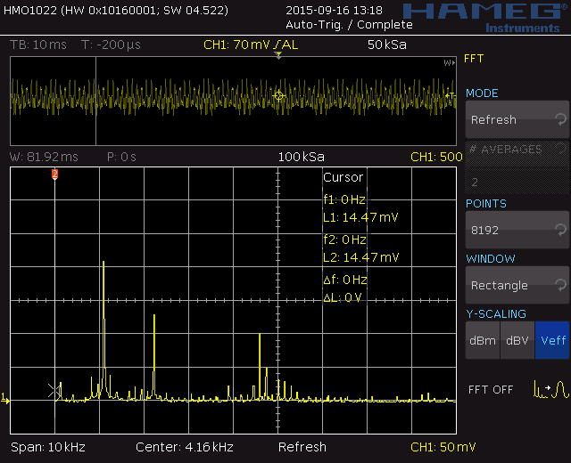
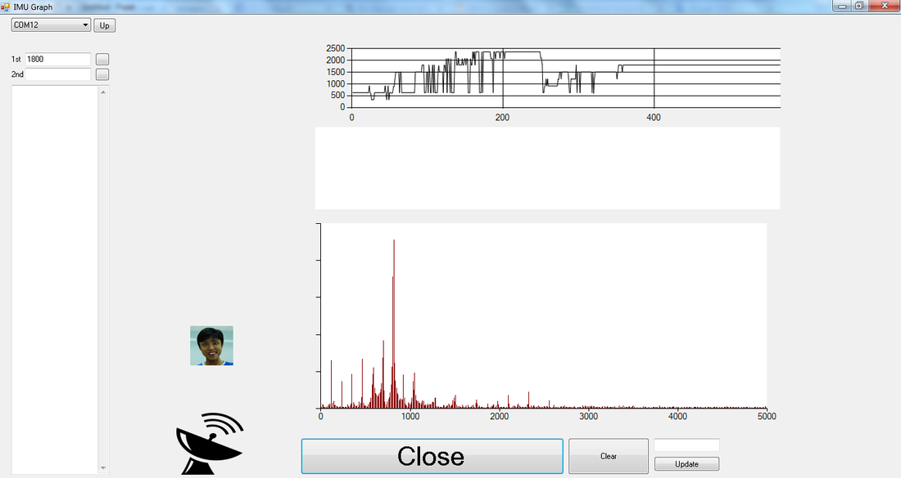

2.4 GHz FMCW radar as a range detector
For my bachelor thesis I built a working radar from off-the-shelf RF modules, home-made horn antennas, custom circuit boards and a microcontroller, then measured how accurately it finds targets.
- Context
- Bachelor thesis, Electrical Engineering and Information Technology, Vietnamese-German University, 2015
- Principle
- Frequency-modulated continuous wave, triangular sweep from 2.285 to 2.504 GHz
- Hardware
- Mini-Circuits RF modules, two pyramidal horn antennas, TI Tiva C LaunchPad with two custom boards
- Software
- Embedded C (Code Composer Studio), C# display program, Matlab for module characterization
- Result
- 0.35 m range resolution, ranges within about 0.2 m up to 7 m

How the radar works
An FMCW radar sends a signal whose frequency sweeps up and down. The echo from a target comes back delayed, so it differs in frequency from what is being sent at that moment. Mixing the two gives a low beat frequency that is proportional to the distance. A Fourier transform of the beat signal then shows one peak per target.
The goal was a system that reaches roughly 20 m outdoors, handles several targets at once and separates two targets 0.5 m apart, with a computer program that shows the results.

Design
-
Characterize every RF module
Before integrating anything I measured the oscillator, splitter, low-noise amplifier, mixer, attenuator and cables with a network analyzer, a noise-figure analyzer and a signal generator, and plotted their performance curves in Matlab. This showed where each part behaves linearly and what it adds to the noise.
-
Choose the sweep
The oscillator’s frequency is not perfectly linear in its tuning voltage. I used only the linear region, 0.5 V to 3.5 V at about 17.5 MHz per volt, which gives a sweep of roughly 218 MHz. That bandwidth sets the range resolution at about 0.35 m.
-
Build the antennas
Two directional pyramidal horns, one to transmit and one to receive, keep the transmitter from leaking into the receiver. I designed them in Antenna Magus, built them and measured gain, reflection and radiation pattern in an ordinary room.
-
Generate the sweep and process the beat signal
A 16-bit DAC with a buffer amplifier produces a 100 Hz triangular tuning voltage. After a 50× IF amplifier and an anti-aliasing filter, the Tiva C samples the beat signal at 10 kS/s, runs an FFT on 1024 samples and sends the ranges to a computer. I designed the DAC and the IF amplifier as plug-in boards that stack on the LaunchPad.
-
Show the results
A C# program receives the ranges over a serial link and displays the targets and the spectrum, either automatically or for manual analysis.


The horn reaches about 9 dBi of gain across 2.4 to 2.5 GHz, and its reflection coefficient is about −30 dB near 2.4 GHz. The main beam falls by 3 dB only 10° off the axis. These antenna measurements were made in a normal room rather than an anechoic chamber, so they carry some tolerance.


Results
The radar first had to be calibrated, because the cables between the RF modules and the microcontroller add a delay that makes every target look farther away. After subtracting the mean offset, I tested it in a 12 m room with a 0.3 m square plate (radar cross section of about 6.5 m²).
| Test | Setup | Outcome |
|---|---|---|
| Single target | Plate at 0.35 m to 7 m | Measured range within about 0.2 m |
| Off-grid targets | Plate at distances that are not multiples of the resolution | Errors up to about 0.15 m, because power spreads over neighboring FFT bins |
| Multiple targets | Plate, dihedral reflector and the room’s wall | Three separate peaks in the beat spectrum |


The 0.35 m resolution beats the 0.5 m goal. I only tested single-target ranges up to 7 m, so the 20 m goal is backed by a link-budget calculation (about 90 dB output signal-to-noise ratio for the plate at 10 m), not by a measurement.
What I took away
- Building a full system from RF front end to display program, and finding that the cables, the filter and the oscillator’s linearity matter as much as any single part.
- Characterizing each module first made it possible to explain the performance of the whole system.
- Better resolution needs a wider sweep, and better sensitivity needs more transmit power or a more linear chirp. Those are the next steps.